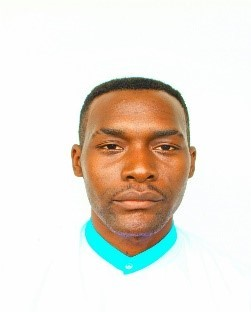

QUI SUI-JE?

Nom: KOUMBA KOUMBA
Prenom: Belly Ardice
Tel: +241 074329148
Mail: Onyxtheleaderman@gmail.com
Ville: Libreville
ÉDUCATION
1. Nom de l'établissement : Collège Ange MBA
Diplome Obtenu : B.E.P.C
Année : 2014
2. Nom de l'établissement : Lycée Paul INDJEDJET NGONDJOUT
Diplome Obtenu : Baccalauréat
Année : 2017
EXPÉRIENCE PROFESSIONNELLE
Pour l'instant je n'ai pas encore d'expérience professionnelle proprement dite hormis les projets sur lesquels je travaille et que je monte moi même en compagnie d'un amie !
BIOGRAPHIE
Je me prénomme KOUMBA KOUMBA Belly Ardice, je suis un étudiant; je fut car il y a quelques mois j'ai décidé d'arrêter les cours à la fac pour écrire ma propre histoire sera peut-être un témoignage.Je me suis lancé dans l'entrepreneurit en classe de 3ème, et ce n'est qu'après l'obtention de mon bac que j'eus décidé de stopper tout.Avec un ami nous avons lancé un webzine dénommé CENTRALE MAGAZINE que vous pouvez retrouver ICI! qui est un webzine s'axant dans la promotion de la musique urbaine africaine.Ensuite j'ai monté avec mon associé une e-boutique dénommé CENTRALE SHOP que vous pouvez également visister ICI!
RÉSEAU SOCIAUX
Je vous présente ma liste de liens réseaux sociaux dans la quelle vous pouvez me retrouver et découvrir un peu ma sphère :
CENTRES D'INTERÊT
- Sport
- Musique
- Cinéphile
- Lecture
- Blog
MULTIMÉDIA
- Ma musique favorite
- La photo de mon héro préféré (IRON MAN)